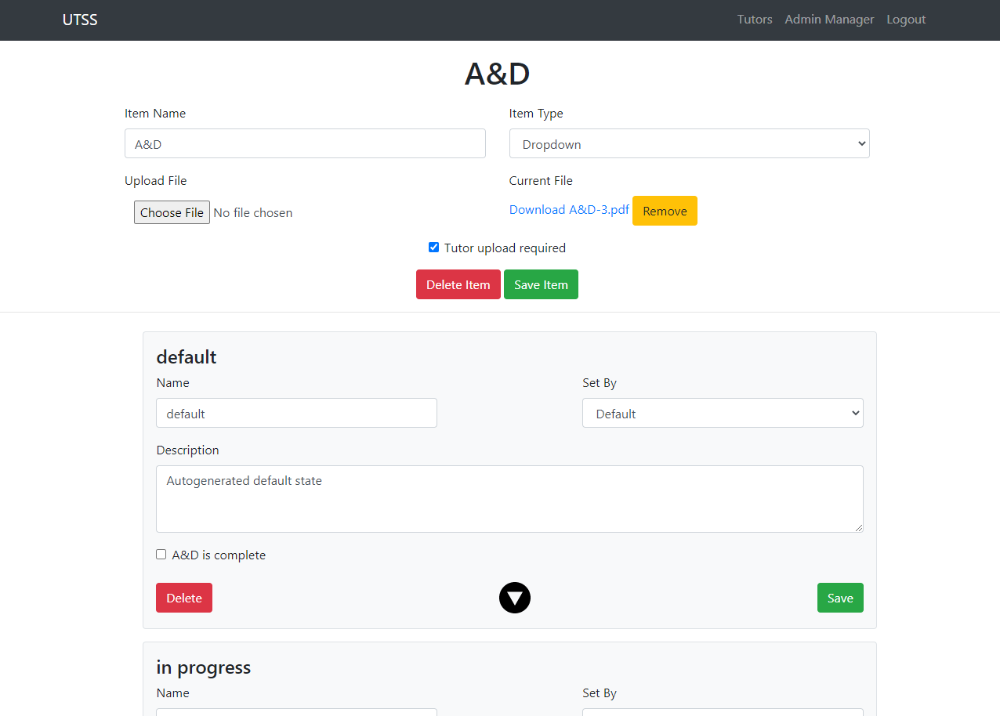

Projects
Onboarding System
University Tutors of Seattle
April 2020-Present
Working on an AGILE team to create a flexible on-boarding management web application for the University Tutor hiring team. The items new user's are required to complete at the beginning of each year can be added, changed and deleted as needed. The application consolidates all of hiring documents and information into one place for easy viewing and management.
Tool used include PHP, SQL, JQuery and Docker.
^ The onboarding table for admin to view and manage existing tutors in the system.
^ The forms to dynamically add new items to the table.
Coding Class Progress Tracker
coding-projects.com
January 2020 - April 2020
coding-projects.com is a platform that organizes and manages my coding tutorials and allows teachers to track student progress through the projects.
^ The page to manage student progress by giving or removing projects from them and editing the projects themselves.
idaydream.org
IDAYDREAM Nonprofit
September 2019 - January 2020
Developed and deployed a web application for the iD.A.Y. Dream non-profit. Worked on the front end with a team at the Seattle GiveCamp hackathon to redesign and migrate the old website to from WordPress to Squarespace.
Worked with a team at Green River to create custom forms, admin tools and data management for users and volunteers on the back end using PHP, MySQL, Docker and JQuery.